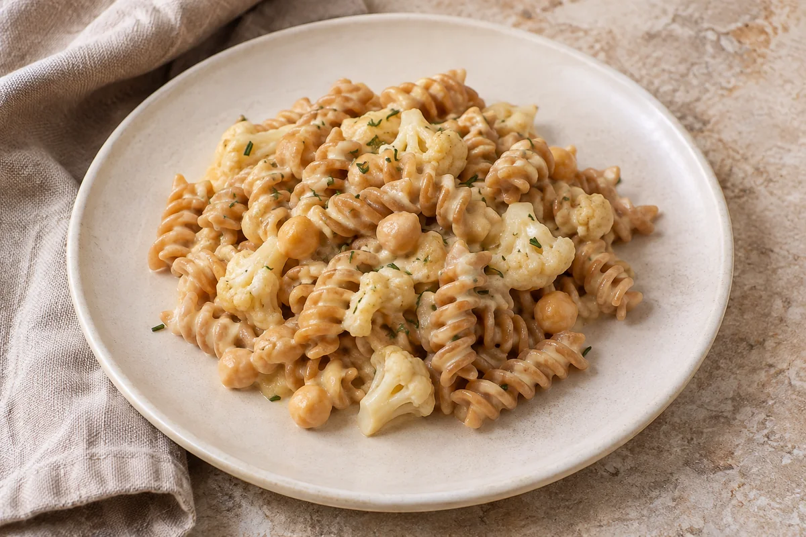
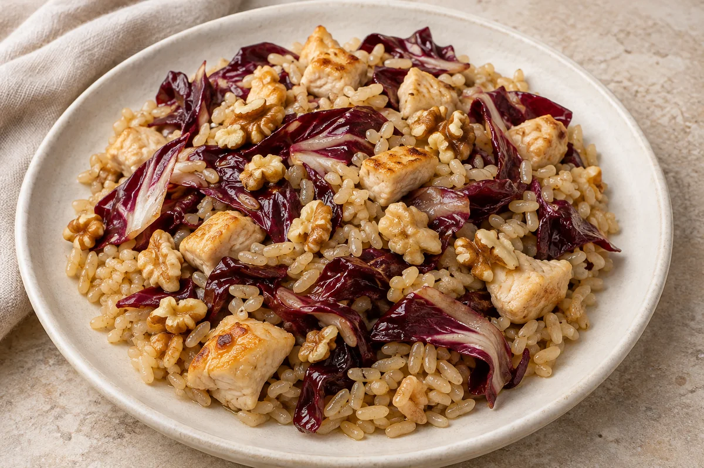
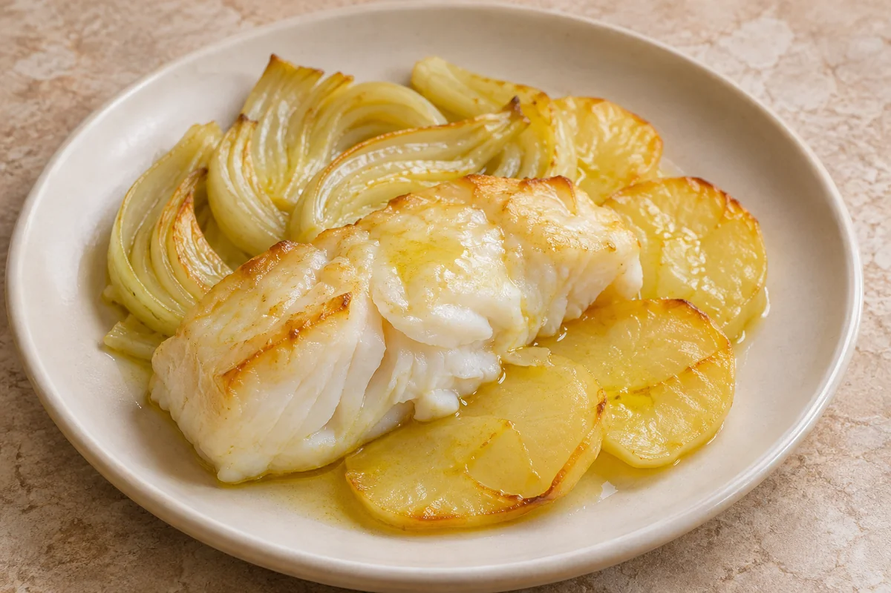
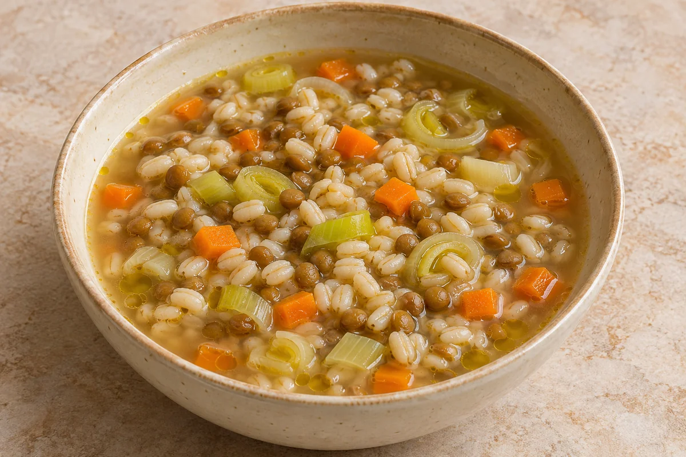
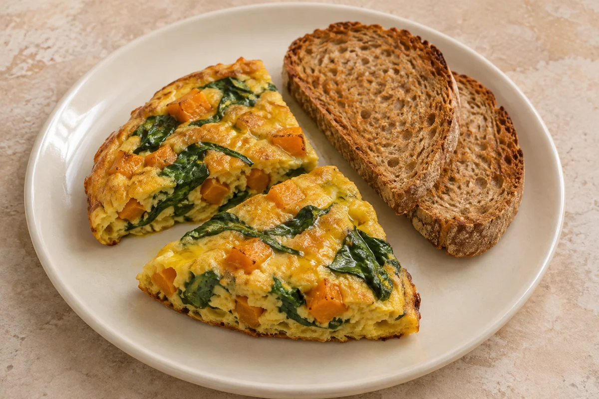

Ricette mediterranee
Sette ricette della rubrica Dieta mediterranea scientifica. Per ogni piatto trovi cosa comprare, quanto pesare e come cucinarlo. Le stime di carboidrati e calorie per porzione si basano sulle tabelle CREA.
Cinque ricette per una persona
I valori sotto ogni piatto si riferiscono alla porzione intera. I carboidrati indicati sono quelli disponibili. Le immagini dei piatti sono illustrative e generate con intelligenza artificiale.

Pasta integrale con crema di ceci, cavolfiore e rosmarino
436 kcal · 57 g di carboidrati
Leggi la ricetta



Frittata di zucca e spinaci con pane integrale tostato
490 kcal · 45 g di carboidrati
Leggi la ricettaAltre ricette mediterranee
Borlotti e riso integrale con pomodori
Per 2 persone: 36,1 g di carboidrati disponibili e 287 kcal stimate per porzione. Pesi di fagioli e riso già cotti e scolati, quattro ingredienti, tabella di calcolo e riferimenti CREA consultabili.
Zuppa di lenticchie, patate e carote
Per 2 persone: 40,0 g di carboidrati disponibili e circa 298 kcal a porzione. Lenticchie, patate e carote pesate dopo la cottura e olio EVO misurato. Foto iperrealistica originale del piatto, quattro tabelle CREA e procedimento completo.
Guida 08 — Come calcolare il costo di una ricetta
Il modello mediterraneo
Le otto guide scientifiche già pubblicate illustrano varietà, equilibrio e moderazione, con esempi su frutta, verdura, legumi, cereali e olio d'oliva. Distinguono le evidenze scientifiche dai consigli individuali e spiegano come considerare il costo degli alimenti.
Fonti ufficiali di riferimento: CREA — Linee guida per una sana alimentazione e Ministero della Salute — Dieta mediterranea.
Capire i carboidrati e le porzioni
Le guide già pubblicate spiegano come leggere le etichette e confrontare pasta, pane, patate, riso e legumi, distinguendo i pesi crudi dai cotti. Le tabelle delle ricette riportano fonte, calcolo e approssimazioni: non vanno usate per decidere autonomamente dosi di insulina o farmaci.
Ingredienti, dosi e valori per porzione
Le tabelle si riferiscono agli ingredienti e alle dosi indicate. Marche diverse o un diverso metodo di cottura possono cambiare i valori.
- gli ingredienti e le quantità, espresse in grammi;
- il numero di porzioni e i passaggi per prepararle;
- i tempi di cottura e, dove utili, suggerimenti per ridurre gli sprechi;
- i carboidrati disponibili in grammi e le calorie per porzione, insieme alle fonti e alle modalità di stima; quando presenti, anche i valori dell'intera ricetta;
- le sostituzioni possibili e gli aspetti da considerare per sale, grassi e spesa.
Se hai il diabete o una malattia del cuore, concorda porzioni e terapie con chi ti segue. Usa i valori delle ricette come riferimento per il pasto e segui le indicazioni ricevute per insulina e altri farmaci.
Pagina aggiornata il .